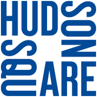

Inicio
Login
Cadastro
New-York
Ver mais
New York City
A cidade mais conhecida como a "grande maçã"
A 2° cidade mais rica e influente do planeta
Central Park
Pulmão de Manhattan
O maior parque urbano de Nova York

Hudson Square
um bairro em Lower Manhattan, Nova York
Caracteristica importante, entrada de Manhattan para o Holland Tunnel.